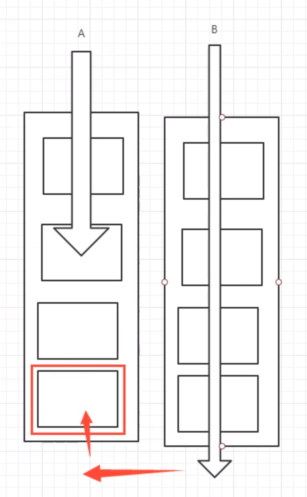

9. 读写锁ReadWriteLock
1 2 3 4 5 6 7 8 9 10 11 12 13 14 15 16 17 18 19 20 21 22 23 24 25 26 27 28 29 30 31 32 33 34 35 36 37 38 39 40 41 42 43 44 45 46 47 48 49 50 51 52 53 54 55 56 57 58 59 60 61 62 63 64 65 66 67 68 69 70 71 72 73 74 75 76 77 78 79 80 81 82 83 84 85 package com.yang.rw;import java.util.HashMap;import java.util.Map;import java.util.concurrent.locks.ReadWriteLock;import java.util.concurrent.locks.ReentrantReadWriteLock;public class ReadWriteLockDemo { public static void main (String[] args) { MyCacheLock myCache = new MyCacheLock (); for (int i = 1 ; i <= 50 ; i++) { final int temp = i; new Thread (()->{ myCache.put(temp+"" ,temp+"" ); },String.valueOf(i)).start(); } for (int i = 1 ; i <=50 ; i++) { final int temp = i; new Thread (()->{ myCache.get(temp+"" ); },String.valueOf(i)).start(); } } } class MyCacheLock { private volatile Map<String,Object> map = new HashMap <>(); private ReadWriteLock readWriteLock = new ReentrantReadWriteLock (); public void put (String key,Object value) { readWriteLock.writeLock().lock(); try { System.out.println(Thread.currentThread().getName()+"写入" +key); map.put(key,value); System.out.println(Thread.currentThread().getName()+"写入OK" ); } catch (Exception e) { e.printStackTrace(); } finally { readWriteLock.writeLock().unlock(); } } public void get (String key) { readWriteLock.readLock().lock(); try { System.out.println(Thread.currentThread().getName()+"读取" +key); Object o = map.get(key); System.out.println(Thread.currentThread().getName()+"读取OK" ); } catch (Exception e) { e.printStackTrace(); } finally { readWriteLock.readLock().unlock(); } } } class MyCache { private volatile Map<String,Object> map = new HashMap <>(); public void put (String key,Object value) { System.out.println(Thread.currentThread().getName()+"写入" +key); map.put(key,value); System.out.println(Thread.currentThread().getName()+"写入OK" ); } public void get (String key) { System.out.println(Thread.currentThread().getName()+"读取" +key); Object o = map.get(key); System.out.println(Thread.currentThread().getName()+"读取OK" ); } }
10.阻塞队列BlockingQueue
阻塞队列：
10.1 BlockQueue 是Collection的一个子类
什么情况下我们会使用阻塞队列：多线程并发处理、线程池
BlockingQueue 有四组api
1 2 3 4 5 6 7 8 9 10 11 12 13 14 15 16 17 18 19 20 21 22 23 24 25 26 27 28 29 30 31 32 33 34 35 36 37 38 39 40 41 42 43 44 45 46 47 48 49 50 51 52 53 54 55 56 57 58 59 60 61 62 63 64 65 66 67 68 69 70 71 72 73 74 75 76 77 78 package com.yang.bq;import java.util.concurrent.ArrayBlockingQueue;import java.util.concurrent.TimeUnit;public class Test { public static void main (String[] args) throws InterruptedException { test4(); } public static void test1 () { ArrayBlockingQueue blockingQueue = new ArrayBlockingQueue <>(3 ); System.out.println(blockingQueue.add("a" )); System.out.println(blockingQueue.add("b" )); System.out.println(blockingQueue.add("c" )); System.out.println("=-===========" ); System.out.println(blockingQueue.remove()); System.out.println(blockingQueue.remove()); System.out.println(blockingQueue.remove()); } public static void test2 () { ArrayBlockingQueue blockingQueue = new ArrayBlockingQueue <>(3 ); System.out.println(blockingQueue.offer("a" )); System.out.println(blockingQueue.offer("b" )); System.out.println(blockingQueue.offer("c" )); System.out.println("============================" ); System.out.println(blockingQueue.poll()); System.out.println(blockingQueue.poll()); System.out.println(blockingQueue.poll()); System.out.println(blockingQueue.poll()); } public static void test3 () throws InterruptedException { ArrayBlockingQueue blockingQueue = new ArrayBlockingQueue <>(3 ); blockingQueue.put("a" ); blockingQueue.put("b" ); blockingQueue.put("c" ); System.out.println(blockingQueue.take()); System.out.println(blockingQueue.take()); System.out.println(blockingQueue.take()); System.out.println(blockingQueue.take()); } public static void test4 () throws InterruptedException { ArrayBlockingQueue blockingQueue = new ArrayBlockingQueue <>(3 ); System.out.println(blockingQueue.offer("a" )); blockingQueue.offer("b" ); blockingQueue.offer("c" ); blockingQueue.offer("d" ,5 ,TimeUnit.SECONDS); System.out.println("===============" ); System.out.println(blockingQueue.poll()); System.out.println(blockingQueue.poll()); System.out.println(blockingQueue.poll()); System.out.println(blockingQueue.poll(2 , TimeUnit.SECONDS)); } }
10.2 同步队列(SynchronousQueue) 同步队列 没有容量，也可以视为容量为1的队列 ；
进去一个元素，必须等待取出来之后，才能再往里面放入一个元素；
put方法 和 take方法 ；
Synchronized 和 其他的BlockingQueue 不一样 它不存储元素；
put了一个元素，就必须从里面先take出来，否则不能再put进去值！
并且SynchronousQueue 的take是使用了lock锁保证线程安全的。
1 2 3 4 5 6 7 8 9 10 11 12 13 14 15 16 17 18 19 20 21 22 23 24 25 26 27 28 29 30 31 32 33 34 35 36 37 38 39 40 41 42 package com.yang.bq;import java.util.concurrent.BlockingQueue;import java.util.concurrent.SynchronousQueue;import java.util.concurrent.TimeUnit;public class SynchronousQueueDemo { public static void main (String[] args) { BlockingQueue<String> blockingQueue = new SynchronousQueue <>(); new Thread (() -> { try { System.out.println(Thread.currentThread().getName() + " put 1" ); blockingQueue.put("1" ); TimeUnit.SECONDS.sleep(3 ); System.out.println(Thread.currentThread().getName() + " put 2" ); blockingQueue.put("2" ); TimeUnit.SECONDS.sleep(3 ); System.out.println(Thread.currentThread().getName() + " put 3" ); blockingQueue.put("3" ); } catch (InterruptedException e) { e.printStackTrace(); } }, "T1" ).start(); new Thread (() -> { try { TimeUnit.SECONDS.sleep(3 ); System.out.println(Thread.currentThread().getName() + "=>" + blockingQueue.take()); TimeUnit.SECONDS.sleep(3 ); System.out.println(Thread.currentThread().getName() + "=>" + blockingQueue.take()); TimeUnit.SECONDS.sleep(3 ); System.out.println(Thread.currentThread().getName() + "=>" + blockingQueue.take()); } catch (InterruptedException e) { e.printStackTrace(); } }, "T2" ).start(); } }
1 2 3 4 5 6 T1 put 1 T2=>1 T1 put 2 T2=>2 T1 put 3 T2=>3
11.线程池(重要) 线程池：三大方式、七大参数、四种拒绝策略
程序的运行，本质：占用系统的资源！我们需要去优化资源的使用 ===> 池化技术
线程池、JDBC的连接池、内存池、对象池 等等
资源的创建、销毁十分消耗资源
池化技术 ：事先准备好一些资源，如果有人要用，就来我这里拿，用完之后还给我，以此来提高效率。
11.1 线程池的好处： 1、降低资源的消耗；
2、提高响应的速度；
3、方便管理；
线程复用、可以控制最大并发数、管理线程；
11.2 线程池：三大方法
1 2 3 ExecutorService threadPool = Executors.newSingleThreadExecutor();ExecutorService threadPool2 = Executors.newFixedThreadPool(5 ); ExecutorService threadPool3 = Executors.newCachedThreadPool();
1 2 3 4 5 6 7 8 9 10 11 12 13 14 15 16 17 18 19 20 21 22 23 24 package com.yang.pool;import java.util.concurrent.ExecutorService;import java.util.concurrent.Executors;public class Demo1 { public static void main (String[] args) { ExecutorService threadPool = Executors.newSingleThreadExecutor(); try { for (int i = 0 ; i < 100 ; i++) { threadPool.execute(()->{ System.out.println(Thread.currentThread().getName()+" ok" ); }); } } catch (Exception e) { e.printStackTrace(); } finally { threadPool.shutdown(); } } }
11.3 七大参数
源码分析
1 2 3 4 5 6 7 8 9 10 11 12 13 14 15 16 17 18 public static ExecutorService newSingleThreadExecutor () { return new FinalizableDelegatedExecutorService (new ThreadPoolExecutor (1 , 1 , 0L , TimeUnit.MILLISECONDS, new LinkedBlockingQueue <Runnable>())); } public static ExecutorService newFixedThreadPool (int nThreads) { return new ThreadPoolExecutor (nThreads, nThreads, 0L , TimeUnit.MILLISECONDS, new LinkedBlockingQueue <Runnable>()); } public static ExecutorService newCachedThreadPool () { return new ThreadPoolExecutor (0 , Integer.MAX_VALUE, 60L , TimeUnit.SECONDS, new SynchronousQueue <Runnable>()); }
本质：ThreadPoolExecutor()
1 2 3 4 5 6 7 8 public ThreadPoolExecutor (int corePoolSize, int maximumPoolSize, long keepAliveTime, TimeUnit unit, BlockingQueue<Runnable> workQueue) { this (corePoolSize, maximumPoolSize, keepAliveTime, unit, workQueue, Executors.defaultThreadFactory(), defaultHandler); }
this
1 2 3 4 5 6 7 8 9 10 11 12 13 14 15 16 17 18 19 20 21 22 23 24 25 public ThreadPoolExecutor (int corePoolSize, //核心线程池大小 int maximumPoolSize, //最大的线程池大小 long keepAliveTime, //超时了没有人调用就会释放 TimeUnit unit, //超时单位 BlockingQueue<Runnable> workQueue, //阻塞队列 ThreadFactory threadFactory, //线程工厂 创建线程的 一般不用动 RejectedExecutionHandler handler //拒绝策略 ) { if (corePoolSize < 0 || maximumPoolSize <= 0 || maximumPoolSize < corePoolSize || keepAliveTime < 0 ) throw new IllegalArgumentException (); if (workQueue == null || threadFactory == null || handler == null ) throw new NullPointerException (); this .acc = System.getSecurityManager() == null ? null : AccessController.getContext(); this .corePoolSize = corePoolSize; this .maximumPoolSize = maximumPoolSize; this .workQueue = workQueue; this .keepAliveTime = unit.toNanos(keepAliveTime); this .threadFactory = threadFactory; this .handler = handler; }
模拟上面的银行业务keepAliveTime设置为1小时：如果1小时都没有业务，就关闭窗口
1 2 3 4 5 6 7 8 9 10 11 12 13 14 15 16 17 18 19 20 21 22 23 24 25 26 27 28 29 30 31 32 33 34 35 36 37 38 39 40 41 42 43 44 package com.yang.pool;import java.util.concurrent.*;public class Demo2 { public static void main (String[] args) { System.out.println(Runtime.getRuntime().availableProcessors()); ExecutorService threadPool = new ThreadPoolExecutor ( 2 , Runtime.getRuntime().availableProcessors(), 3 , TimeUnit.SECONDS, new LinkedBlockingDeque <>(3 ), Executors.defaultThreadFactory(), new ThreadPoolExecutor .DiscardOldestPolicy()); try { for (int i = 1 ; i <= 8 ; i++) { threadPool.execute(()->{ System.out.println(Thread.currentThread().getName()+" ok" ); }); } } catch (Exception e) { e.printStackTrace(); } finally { threadPool.shutdown(); } } }
11.4 拒绝策略
1 2 3 4 5 6 7 8 new ThreadPoolExecutor .AbortPolicy()： 超出最大承载，就会抛出异常：队列容量大小+maxPoolSize new ThreadPoolExecutor .CallerRunsPolicy()： new ThreadPoolExecutor .DiscardPolicy(): new ThreadPoolExecutor .DiscardOldestPolicy()：
11.5 如何设置线程池的大小 1、CPU密集型：电脑的核数是几核就选择几；选择maximunPoolSize的大小
1 2 3 4 5 6 7 8 9 10 11 int max = Runtime.getRuntime().availableProcessors();ExecutorService service = new ThreadPoolExecutor ( 2 , max, 3 , TimeUnit.SECONDS, new LinkedBlockingDeque <>(3 ), Executors.defaultThreadFactory(), new ThreadPoolExecutor .AbortPolicy() );
2、I/O密集型：
在程序中有15个大型任务，io十分占用资源；I/O密集型就是判断我们程序中十分耗I/O的线程数量，大约是最大I/O数的一倍到两倍之间。
12. 四大函数式接口 新时代的程序员：lambda表达式、链式编程、函数式接口、Stream流式计算
函数式接口：只有一个方法的接口
1 2 3 4 5 6 7 @FunctionalInterface public interface Runnable { public abstract void run () ; }
12.1 Function 函数型接口 1 2 3 4 5 6 7 8 9 10 11 @FunctionalInterface public interface Function <T, R> { R apply (T t) ; }
1 2 3 4 5 6 7 8 9 10 11 12 13 14 15 16 17 18 19 20 package com.yang.function;import java.util.function.Function;public class Demo01 { public static void main (String[] args) { Function<String,String> function = (str)->{return str;}; System.out.println(function.apply("asd" )); } }
12.2 Predicate 断定型接口 1 2 3 4 5 6 7 8 9 10 11 12 @FunctionalInterface public interface Predicate <T> { boolean test (T t) ; }
1 2 3 4 5 6 7 8 9 10 11 12 13 14 15 16 17 18 19 package com.yang.function;import java.util.function.Predicate;public class Demo02 { public static void main (String[] args) { Predicate<String> predicate = (str)->{return str.isEmpty(); }; System.out.println(predicate.test("" )); } }
12.3 Suppier 供给型接口 1 2 3 4 5 6 7 8 9 10 @FunctionalInterface public interface Supplier <T> { T get () ; }
1 2 3 4 5 6 7 8 9 10 11 12 13 14 15 16 17 18 19 package com.yang.function;import java.util.function.Supplier;public class Demo04 { public static void main (String[] args) { Supplier<Integer> supplier = ()->{ return 1024 ; }; System.out.println(supplier.get()); } }
12.4 Consummer 消费型接口 1 2 3 4 5 6 7 8 9 10 @FunctionalInterface public interface Consumer <T> { void accept (T t) ; }
1 2 3 4 5 6 7 8 9 10 11 12 13 14 15 16 17 18 package com.yang.function;import java.util.function.Consumer;public class Demo03 { public static void main (String[] args) { Consumer<String> consumer = new Consumer <String>() { @Override public void accept (String str) { System.out.println(str); } }; consumer.accept("sdadasd" ); } }
13. Stream 流式计算
1 2 3 4 5 6 7 8 9 10 11 12 13 14 package com.yang.stream;import lombok.AllArgsConstructor;import lombok.Data;import lombok.NoArgsConstructor;@Data @AllArgsConstructor @NoArgsConstructor public class User { private int id; private String name; private int age; }
1 2 3 4 5 6 7 8 9 10 11 12 13 14 15 16 17 18 19 20 21 22 23 24 25 26 27 28 29 30 31 32 33 34 package com.yang.stream;import java.util.Arrays;import java.util.List;public class Test { public static void main (String[] args) { User u1 = new User (1 ,"a" ,21 ); User u2 = new User (2 ,"b" ,22 ); User u3 = new User (3 ,"c" ,23 ); User u4 = new User (4 ,"d" ,24 ); User u5 = new User (6 ,"e" ,25 ); List<User> list = Arrays.asList(u1, u2, u3, u4, u5); System.out.println(list); list.stream() .filter(u->{return u.getId()%2 ==0 ;}) .filter(u->{return u.getAge()>23 ;}) .map(u->{return u.getName().toUpperCase();}) .sorted((uu1,uu2)->{return uu2.compareTo(uu1);}) .limit(1 ) .forEach(System.out::println); } }
补充1:（<? super T>） 1 2 3 List<? super T> list; Stream<T> filter (Predicate<? super T> predicate) ;
补充2:（<? extends R>） 1 2 List<? extends T > list; <R> Stream<R> map (Function<? super T, ? extends R> mapper) ;
14.ForkJoin（分支合并） ForkJoin 在JDK1.7，并行执行任务！提高效率~。在大数据量速率会更快！
大数据中：MapReduce 核心思想->把大任务拆分为小任务！
14.1 ForkJoin 特点： 工作窃取！ 实现原理是：双端队列 ！从上面和下面都可以去拿到任务进行执行！

14.2 如何使用ForkJoin?
1 2 3 4 5 6 7 8 9 10 11 12 13 14 15 16 17 18 19 20 21 22 23 24 25 26 27 28 29 30 31 32 33 34 35 36 37 38 39 40 41 package com.yang.forkjoin;import java.util.concurrent.RecursiveTask;public class ForkJoinDemo extends RecursiveTask <Long> { private Long start; private Long end; private Long temp = 10000L ; public ForkJoinDemo (Long start, Long end) { this .start = start; this .end = end; } @Override protected Long compute () { if ((end-start)<temp){ Long sum = 0L ; for (Long i = start; i <= end; i++) { sum += i; } return sum; }else { long middle = (start + end) / 2 ; ForkJoinDemo task1 = new ForkJoinDemo (start, middle); task1.fork(); ForkJoinDemo task2 = new ForkJoinDemo (middle+1 , end); task2.fork(); long result=task1.join() + task2.join(); System.out.println("result = " + " ==> " + result); return task1.join() + task2.join(); } } }
1 2 3 4 5 6 7 8 9 10 11 12 13 14 15 16 17 18 19 20 21 22 23 24 25 26 27 28 29 30 31 32 33 34 35 36 37 38 39 40 41 42 43 44 45 46 47 48 package com.yang.forkjoin;import java.util.concurrent.ExecutionException;import java.util.concurrent.ForkJoinPool;import java.util.concurrent.ForkJoinTask;import java.util.stream.LongStream;public class Test { public static void main (String[] args) throws ExecutionException,InterruptedException { test2(); } public static void test1 () { Long sum = 0L ; long start = System.currentTimeMillis(); for (Long i = 1L ; i <= 10_0000_0000 ; i++) { sum += i; } long end = System.currentTimeMillis(); System.out.println("sum=" +sum+" 时间：" +(end-start)); } public static void test2 () throws ExecutionException, InterruptedException { long start = System.currentTimeMillis(); ForkJoinPool forkJoinPool = new ForkJoinPool (); ForkJoinTask<Long> task = new ForkJoinDemo (0L , 10_0000_0000L ); Long sum = forkJoinPool.invoke(task); long end = System.currentTimeMillis(); System.out.println("sum=" +sum+" 时间：" +(end-start)); } public static void test3 () { long start = System.currentTimeMillis(); long sum = LongStream.rangeClosed(0L ,10_0000_0000L ).parallel().reduce(0 , Long::sum); long end = System.currentTimeMillis(); System.out.println("sum=" +"时间：" +(end-start)); } }
15. 异步回调
Future 设计的初衷：对将来的某个事件结果进行建模！
其实就是前端 –> 发送ajax异步请求给后端
但是我们平时都使用**CompletableFuture**
15.1 没有返回值的runAsync异步回调 1 2 3 4 5 6 7 8 9 10 11 12 13 14 15 16 17 18 19 CompletableFuture<Void> completableFuture = CompletableFuture.runAsync(()->{ try { TimeUnit.SECONDS.sleep(2 ); } catch (InterruptedException e) { e.printStackTrace(); } System.out.println(Thread.currentThread().getName()+"runAsync=>Void" ); }); System.out.println("1111" ); completableFuture.get(); }
15.2 有返回值的异步回调supplyAsync 1 2 3 4 5 6 7 8 9 10 11 12 13 14 15 CompletableFuture<Integer> completableFuture = CompletableFuture.supplyAsync(()->{ System.out.println(Thread.currentThread().getName()+"supplyAsync=>Integer" ); int i = 10 /0 ; return 1024 ; }); System.out.println(completableFuture.whenComplete((t, u) -> { System.out.println("t=>" + t); System.out.println("u=>" + u); }).exceptionally((e) -> { System.out.println(e.getMessage()); return 233 ; }).get());
whenComplete : 有两个参数，一个是t 一个是u
T：是代表的 正常返回的结果 ；
U：是代表的 抛出异常的错误信息 ；
如果发生了异常，get可以获取到exceptionally 返回的值；